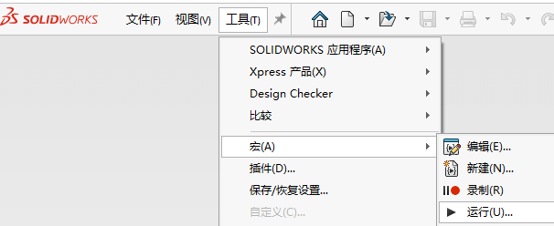

装饰螺纹线显示大
问题
在 SOLIDWORKS 2016 或更高版本的软件中打开旧版 SOLIDWORKS® 零件、装配体或工程图文件，装饰螺纹线会显示得很大
方法1：手动
如果编辑了使用错误的装饰螺纹线尺寸的孔，然后不进行任何更改便加以确认，装饰螺纹线将被更正。
方法2：批量
要运行宏文件，请执行以下步骤：
下载 宏程序：
打开 SOLIDWORKS® 应用程序。转到“工具”>“宏”>“运行”。

4.复制和粘贴包含受影响的文件集的文件夹的位置 >“确定”。

该宏将打开所有零件、装配体和工程图文件，编辑所有孔，在不做任何更改的情况下确认，然后重建并保存文件。此过程应能更正装饰螺纹线的大小。